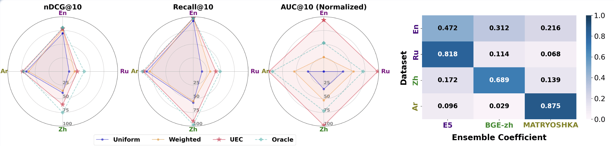
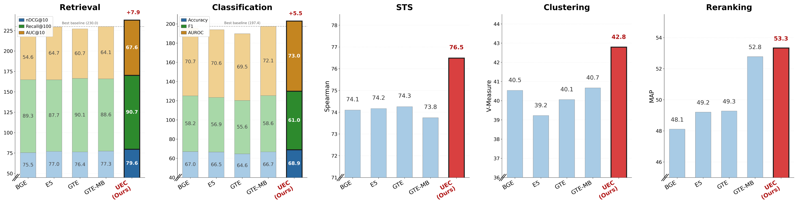
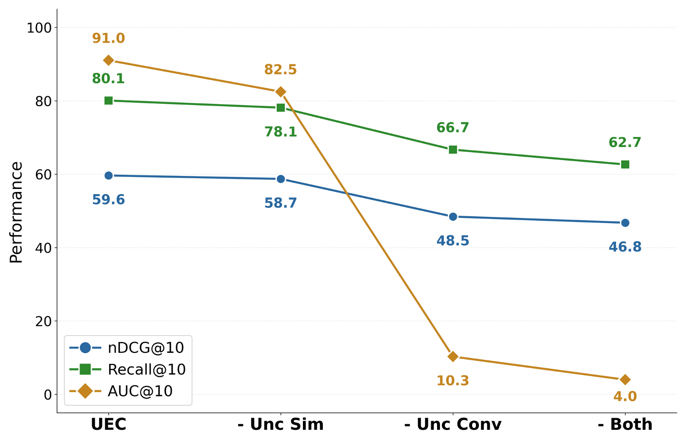
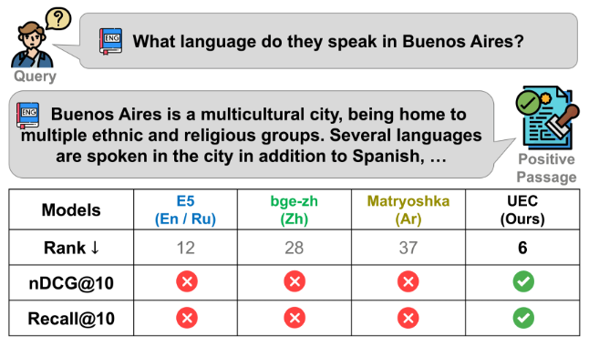

Uncertainty-driven Embedding Convolution
Yonsei University
Abstract
Text embeddings are essential components in modern NLP pipelines. Although numerous embedding models have been proposed, no single model consistently dominates across domains and tasks. This variability motivates the use of ensemble techniques to combine complementary strengths. However, most existing ensemble methods operate on deterministic embeddings and fail to account for model-specific uncertainty, limiting their robustness and reliability in downstream applications. To address these limitations, we propose Uncertainty-driven Embedding Convolution (UEC). UEC first transforms deterministic embeddings into probabilistic ones in a post-hoc manner. It then computes adaptive ensemble coefficients based on embedding uncertainty, derived from a principled surrogate-loss formulation. Additionally, UEC employs an uncertainty-aware similarity function that directly incorporates uncertainty into the similarity scoring, providing a theoretically grounded and efficient surrogate to distributional distances. Extensive experiments on diverse benchmarks demonstrate that UEC consistently improves both performance and robustness by leveraging principled uncertainty modeling.
Presentation
Method

Experimental Results




Citation
@inproceedings{lim2026uncertainty,
title={Uncertainty-driven Embedding Convolution},
author={Lim, Sungjun and Noh, Kangjun and Choi, Youngjun and Lee, Heeyoung and Song, Kyungwoo},
booktitle={International Conference on Learning Representations},
year={2026},
url={https://arxiv.org/abs/2507.20718}
}